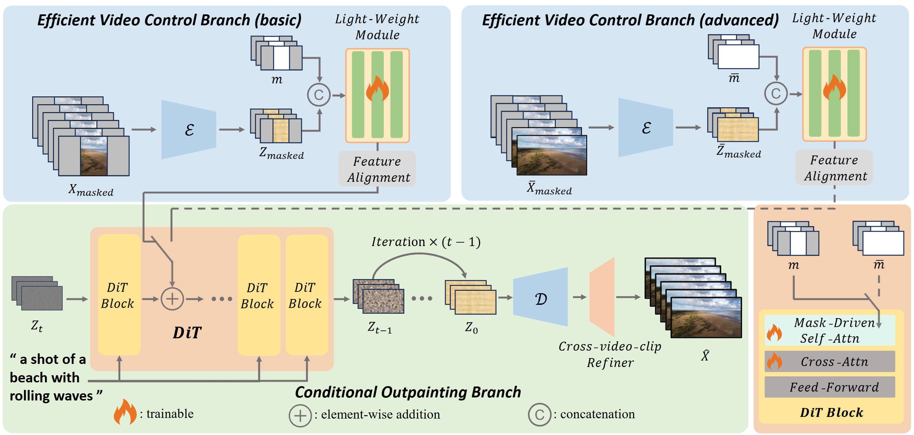

OutDreamer: Video Outpainting with a Diffusion Transformer
Linhao Zhong1,*,
Fan Li2,4,*,‡,
Yi Huang3,
Jianzhuang Liu3,
Renjing Pei2,
Fenglong Song2
1
Zhejiang University, China
2
Huawei Noah's Ark Lab, China
3
Shenzhen Institute of Advanced Technology, Chinese Academy of Sciences, China
4
Nankai University, China
*
Equal contribution
‡
Corresponding author
Abstract

Video outpainting is a challenging task that generates new video content by extending beyond the boundaries of an original input video, requiring both temporal and spatial consistency. Many state-of-the-art methods utilize latent diffusion models with U-Net backbones but still struggle to achieve high quality and adaptability in generated content. Diffusion transformers (DiTs) have emerged as a promising alternative because of their superior performance. We introduce OutDreamer, a DiT-based video outpainting framework comprising two main components: an efficient video control branch and a conditional outpainting branch. The efficient video control branch effectively extracts masked video information, while the conditional outpainting branch generates missing content based on these extracted conditions. Additionally, we propose a mask-driven self-attention layer that dynamically integrates the given mask information, further enhancing the model's adaptability to outpainting tasks. Furthermore, we introduce a latent alignment loss to maintain overall consistency both within and between frames. For long video outpainting, we employ a cross-video-clip refiner to iteratively generate missing content, ensuring temporal consistency across video clips. Extensive evaluations demonstrate that our zero-shot OutDreamer outperforms state-of-the-art zero-shot methods on widely recognized benchmarks.
Results
Short Video Outpainting Results
fps=8
Long Video Outpainting Results
fps=20
Citation
If you find our work useful, please consider citing:
@article{zhong2026outdreamer,
title={Outdreamer: Video outpainting with a diffusion transformer},
author={Zhong, Linhao and Li, Fan and Huang, Yi and Liu, Jianzhuang and Pei, Renjing and Song, Fenglong},
journal={IEEE Transactions on Image Processing},
year={2026},
publisher={IEEE}
}